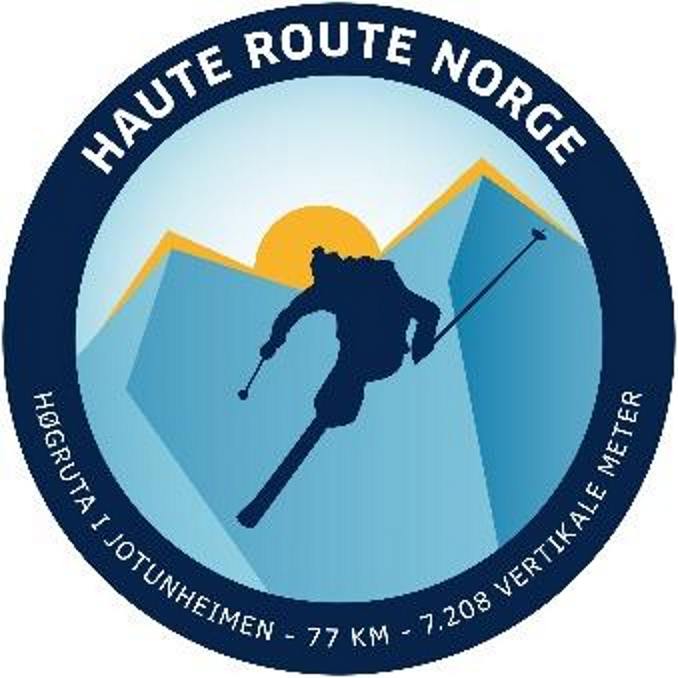

Høgruta i Jotunheimen
Jotunheimen Haute Route er ein 5 dagars topptur i hjartet Jotunheimen nasjonalpark. Ruta går over minst åtte brear og sju 2000-metertoppar, inkludert Glittertind og Galdhøpiggen. Overnatting skjer på betjente hytter. Kvar etappe er ca 15 km, med 1000 – 1500 meter stigning.
Guiding
Les meir på www.jotunheimenhauteroute.no/
